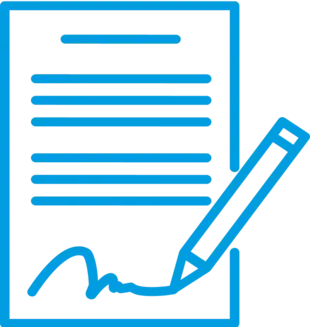

Débouchage de canalisations : À Deuil-la-Barre, notre équipe spécialisée intervient rapidement pour éliminer tout type de bouchon dans vos canalisations. Grâce à nos équipements haute pression, nous assurons un débouchage propre, efficace et sans endommager vos installations sanitaires.
Assainissement IDF
SERVICES


Inspection caméra : Nos interventions à Deuil-la-Barre s’appuient sur l’utilisation de caméras d’inspection pour explorer vos réseaux d’eaux usées. Cette technologie permet de localiser précisément les anomalies, sans travaux destructifs, et d’établir un diagnostic fiable avant toute réparation.
Bacs à graisse : À Deuil-la-Barre, nous assurons la vidange, le nettoyage et l’entretien complet de vos bacs à graisse. Ces prestations sont essentielles pour garantir le bon fonctionnement de vos installations et éviter les engorgements. Que vous soyez particulier ou restaurateur, nous intervenons avec réactivité.


Cuves à fioul : Nous prenons en charge à Deuil-la-Barre toutes les étapes du traitement de votre ancienne cuve à fioul : vidange, nettoyage, dégazage, neutralisation et dépose. Nos interventions respectent les normes environnementales les plus strictes, pour votre sécurité et celle de votre habitation.


UNE ÉQUIPE QUALIFIÉE ET UN MATÉRIEL PERFORMANT À DEUIL-LA-BARRE
Pour nos prestations à Deuil-la-Barre — vidange de cuves à fioul, entretien de bacs à graisse, inspection vidéo des canalisations ou débouchage de réseaux — nous disposons d’une flotte de véhicules adaptée à tous les accès. Camions hydrocureurs, poids lourds de pompage ou véhicules compacts, notre matériel nous permet de répondre à chaque situation avec efficacité. Grâce à notre équipe expérimentée, nous intervenons rapidement, avec des solutions ciblées et durables.
DES TARIFS CLAIRS ET ADAPTÉS À DEUIL-LA-BARRE
TRANSPARENCE ET COMPÉTITIVITÉ
À Deuil-la-Barre, nous proposons des interventions en assainissement à des tarifs parfaitement maîtrisés : cuves à fioul, bacs à graisse, passage caméra ou débouchage. Nos prix sont communiqués en toute transparence dès la demande de devis. Faites le choix d’une solution professionnelle, rapide et au juste prix.
DEVIS GRATUITPOURQUOI FAIRE APPEL À ASSAINISSEMENT 95 À DEUIL-LA-BARRE ?
Que ce soit pour une urgence ou un entretien régulier à Deuil-la-Barre, Assainissement 95 intervient avec professionnalisme. Notre équipe expérimentée maîtrise tous les aspects du métier : débouchage de canalisations, inspection vidéo, vidange de bacs à graisse, traitement de cuves à fioul. Notre promesse : qualité, rapidité et accompagnement de A à Z pour chaque intervention.
DES CONTRATS D'ENTRETIEN FLEXIBLES POUR DEUIL-LA-BARRE
ENTRETIENS PONCTUELS OU RÉGULIERS
À Deuil-la-Barre, nos contrats d’assainissement s’adaptent à vos besoins, qu’ils soient ponctuels ou annuels. Tout est détaillé à l’avance : fréquence des passages, nature des travaux, délais et coûts. Ce fonctionnement transparent vous permet de rester serein, tout en assurant le bon état de vos installations à long terme.
UN SERVICE COMPLET POUR TOUS VOS BESOINS EN ASSAINISSEMENT À DEUIL-LA-BARRE
Nous intervenons à Deuil-la-Barre pour tout type de débouchage de canalisations : évier, toilettes, douche, colonne principale. Nos équipements haute pression garantissent une intervention rapide et sans dégâts.
Pour détecter l’origine de vos problèmes d’écoulement, nous réalisons des inspections caméra de vos conduits. Cette technologie permet un diagnostic précis sans travaux de démolition.
Nous assurons aussi la vidange, le nettoyage et la maintenance de vos bacs à graisse, pour éviter les obstructions et les mauvaises odeurs, aussi bien chez les professionnels que les particuliers.
Enfin, nous prenons en charge la vidange, la neutralisation et la dépose de cuves à fioul. Toutes nos interventions à Deuil-la-Barre sont réalisées dans le respect des normes environnementales.
NOS VALEURS
QUALITÉ
UN ENGAGEMENT CONSTANT
Notre priorité à Deuil-la-Barre : vous offrir une qualité de service irréprochable à chaque étape de l’intervention, avec des résultats durables.
PASSION
UN MÉTIER EXERCÉ AVEC ENVIE
Nous mettons tout notre savoir-faire et notre passion du métier dans chaque mission d’assainissement. Cette implication est la clé d’un service réussi.
ENGAGEMENT
LE RESPECT AVANT TOUT
Respect des lieux, des délais, de vos attentes : notre engagement est total. Chaque intervention à Deuil-la-Barre est menée avec soin et sérieux.
CONFIANCE
UNE RELATION DURABLE
Chez Assainissement 95, nous instaurons un climat de confiance grâce à l’écoute, la transparence et des conseils adaptés à votre situation.